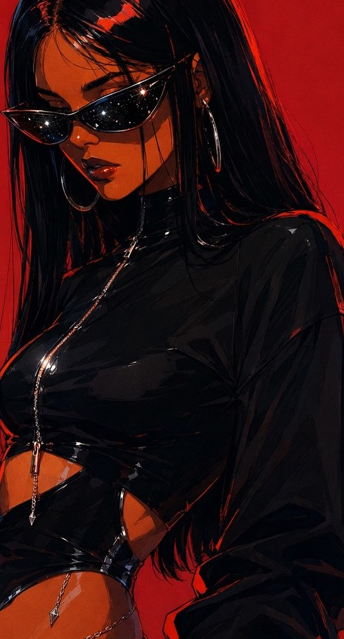

Techno sets
Live preview
Sets
Dates
Visuals
Transmissions
Instagram ↗
Juliet
UNKNOWN
↺ Realign
MAROATA
Next date
Episodes.unk
SoundCloud
⤢
Next
episode
On air now
All sets ↗
Transmissions.log
⤢

Subject // Juliet ·
·
Scan 01/02
Directive
Dates.cal
⤢
Bookings via Instagram ↗
T-minus
Visuals.yt
YouTube
⤢
Feed.ig
Instagram
@maroata_
Follow on Instagram ↗
· Hosted by
UNKNOWN
Your time
episodes
Archive · tracklists
Sets
Dates
Log
UNKNOWN
Video
IG ↗
Juliet
MAROATA ·
UNKNOWN · Radio show
[ × ] Close